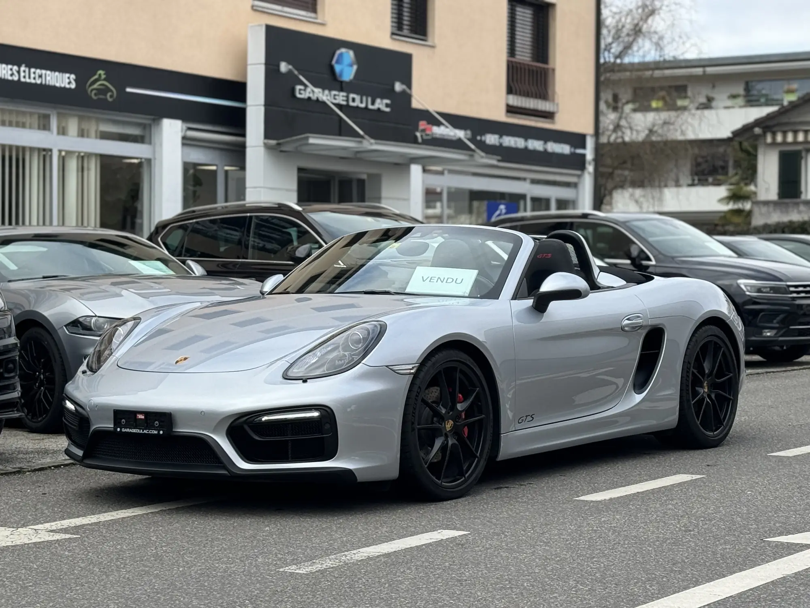
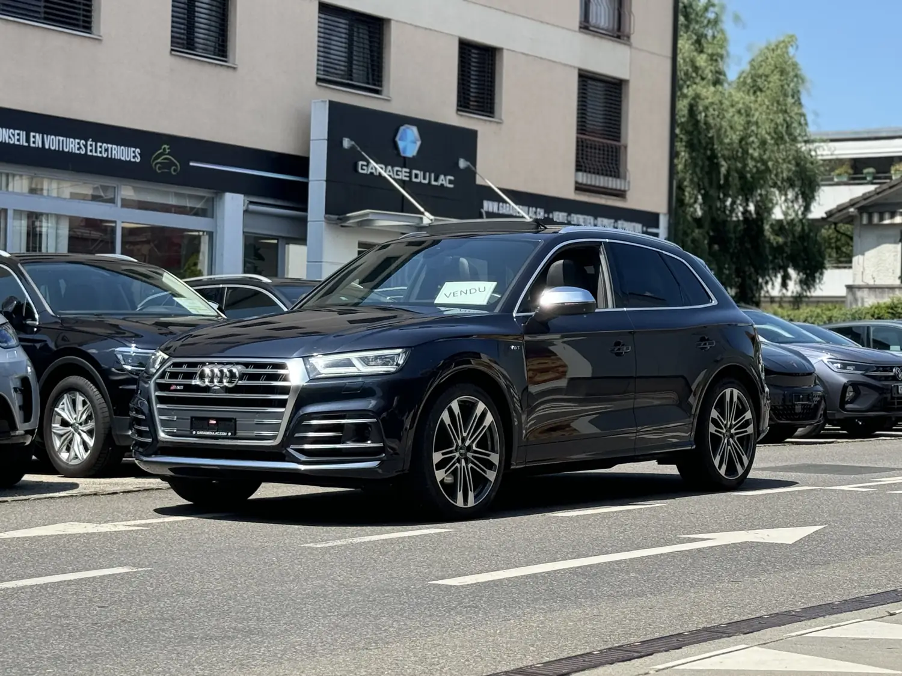
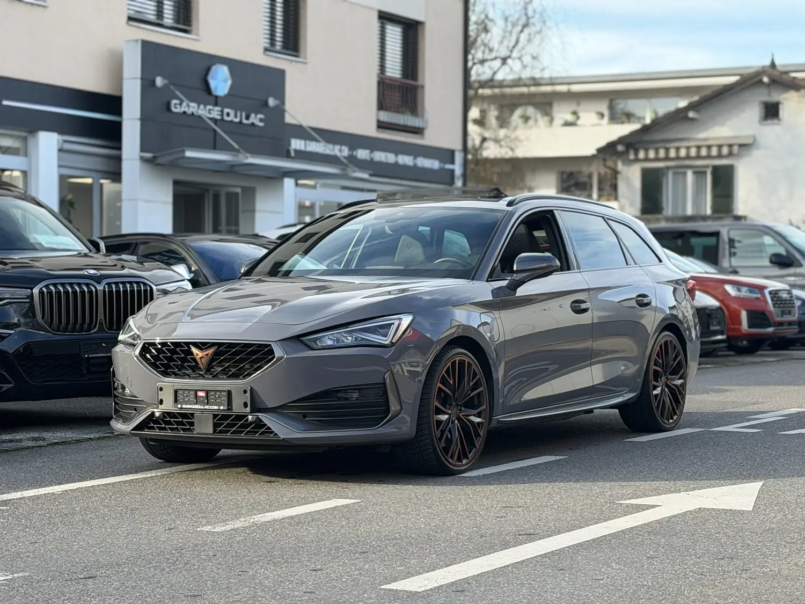
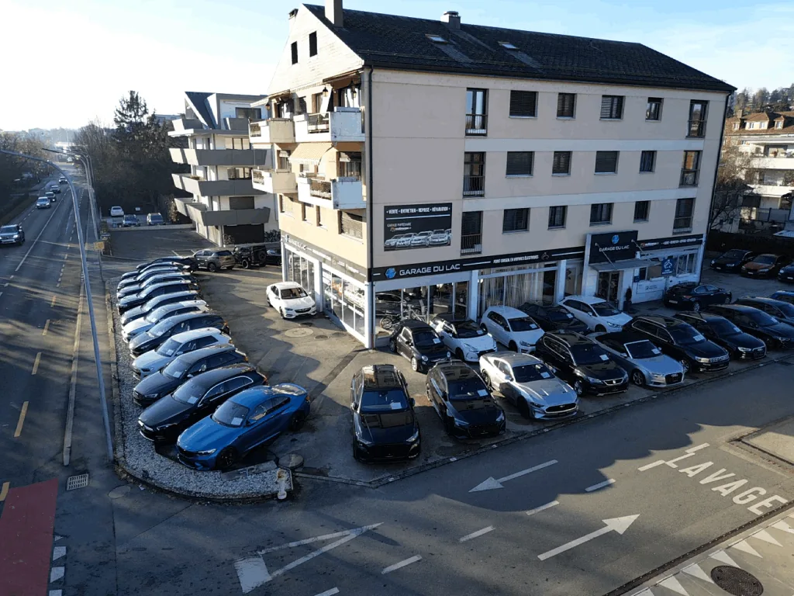

Un garage à taille humaine, à Morges depuis 1978.
Vente de véhicules neufs et d’occasion, toutes marques, mécanique, carrosserie et pneus, au même endroit.

À l’atelier.
Entretien, réparation, carrosserie
- Mécanique toutes marquesVidanges, filtres, freins, transmissions, diagnostic, électronique, véhicules électriques et hybrides.
- Carrosserie et peintureRayures, bosses, réparations après accident, peinture complète ou partielle. Travail avec toutes les assurances.
- Montage et équilibrage de roues
- Gardiennage de roues et de pneusDémontage, stockage en lieu sûr, remontage au changement de saison.
- Jantes et pneusÉté, hiver, toutes saisons, haute performance.
- Géométrie
- ClimatisationContrôle et recharge.
- Préparation à l’expertiseVérification et remise en conformité aux normes suisses.
- Remplacement de pare-briseAvec prise en charge des démarches auprès de la plupart des assurances.
- Véhicule de prêtPendant la durée de la réparation.
Au showroom.
Acheter, reprendre, financer
- Véhicules neufs et d’occasionToutes marques. La liste des véhicules actuellement disponibles est tenue à jour.
- Reprise de votre ancien véhiculeUne solution simple, rapide et transparente, avec formulaire de demande.
- FinancementLeasing ou crédit, selon que vous préférez changer de véhicule tous les 2 à 4 ans ou en devenir propriétaire.
- Électrique et hybrideVéhicules 100 % électriques, hybrides rechargeables et hybrides.


L’équipe.
- Carlos CostaAdministrateur et vente
- Gérard FerracaneResponsable d’atelier
- Marco Da SilvaMécanicien
- Sylvie MartinetRéceptionniste
- Sandra PiguetConseillère de vente
- Fabio GuerrieroApprenti vendeur
Créé en 1978, le Garage du Lac Morges vous propose la vente de véhicules neufs et d’occasion, toutes marques confondues, ainsi que la réparation et l’entretien.
Les valeurs du garage restent les mêmes : un garage à taille humaine, dont l’objectif principal est la satisfaction de ses clients.

Adresse
Garage du Lac Morges SA
Chemin de Buvelot 2
1110 Morges
Voir le plan d’accès
Horaires
Bureau et atelier, du lundi au vendredi : 07h30–18h00
Samedi : 08h30–17h30 (vente uniquement)